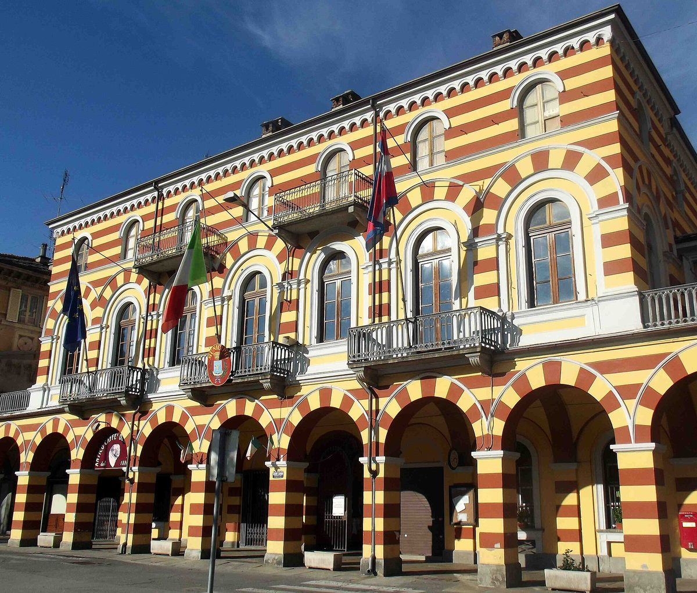

이탈리아 발펠리체 재생에너지공동체, 회원 6명에서 154명으로…레가암비엔테 전국 생태 전환 현장에 CER로는 처음 올라

옛 공장 부지에 309.6kWp 태양광·240kWh 배터리 갖춘 체육시설…지역 에너지 기업·발도파 디아코니아·가톨릭 교구가 함께 만들고 지자체 11곳 참여, 공유 수익은 복지 사업에
이탈리아 피에몬테주 루세르나산조반니의 발펠리체 재생에너지공동체(CER)가 환경단체 레가암비엔테의 전국 캠페인 '생태 전환 현장' 목록에 CER로는 처음 이름을 올렸으며, 레가암비엔테는 10월 20일 캠페인의 48번째 방문지로 이곳을 찾았다. 공동체는 2023년 지역 공기업 계열 에너지 기업인 아체아 피네롤레제 에너지아가 개신교 복지재단 발도파 디아코니아, 피네롤로 가톨릭 교구, 테크노체니트와 함께 3,000㎡가 넘는 옛 공장 부지를 되살려 만들었고, 이곳에는 파델 코트 6면과 비치발리볼장, 체육관, 전기차 충전시설이 들어섰다. 시설 지붕 1,428㎡에 깔린 309.6kWp 규모 태양광이 한 해 약 371MWh를 만들고 240kWh 배터리가 낮에 만든 전기를 저녁에 쓸 수 있게 하며, 2024년에는 두 발전소가 모두 8만2,356kWh를 생산해 이 가운데 3만1,930kWh를 현장에서 바로 썼다. 회원은 출범 때 6명에서 154명으로 늘었는데, 소비자 147명과 생산자 6명, 발전소 8곳을 둔 제3 생산자 1곳으로 이뤄져 있고 지자체 11곳, 인구 약 3만7,000명이 공동체 범위에 든다. 디아코니아의 양로원과 호스텔, 교구의 성당과 청소년회관도 참여하며, 공동체는 설비를 약 1.5MW, 연 약 2GWh까지 늘리고 에너지 공유로 생긴 돈을 교구 쉼터와 디아코니아 복지 사업에 쓸 계획이다. 레가암비엔테는 정부에 CER 시행 절차를 더 간소화하라고 요구했다.
시민에너지 관점
출범 때 6명이던 회원이 154명으로 늘고 지자체 11곳이 함께하는 이 공동체는, 종교 복지기관과 지역 에너지 기업, 지자체가 힘을 모은 사회연대경제형 에너지 모델이 실제로 굴러갈 수 있음을 보여 준다. 작은 공동체는 수익이 적어 오래가기 어렵다는 우려도 있지만, 이곳은 체육시설과 복지시설을 회원으로 묶고 공유 수익을 돌봄 사업에 돌려 에너지가 지역 복지의 재원이 되는 길을 열고 있다. 버려진 공장 터와 지붕에 설비를 두고 주민과 지역 기관이 회원이자 생산자로 참여해야 전기와 수익이 마을 안에서 돈다. 국내 햇빛소득마을과 사회연대경제 조직도 복지기관·종교시설·지자체를 한 공동체로 묶어야 하고, 정부는 이런 공동체를 쉽게 만들 수 있도록 절차부터 줄여야 한다.
출처: 리포르마(Riforma.it) 2026-10-23 편집부 원문 보기
イタリアのヴァル・ペッリチェ再エネ共同体、会員6人から154人に…レガンビエンテの全国「生態系転換の現場」にCERとして初めて選定
旧工場跡に309.6kWpの太陽光と240kWhの蓄電池を備えたスポーツ施設…地域のエネルギー企業・ワルド派ディアコニア・カトリック教区が共に設立し11自治体が参加、共有の収益は福祉事業に
イタリア・ピエモンテ州ルゼルナ・サン・ジョヴァンニのヴァル・ペッリチェ再生可能エネルギー共同体（CER）が、環境団体レガンビエンテの全国キャンペーン「生態系転換の現場」のリストにCERとして初めて名を連ね、レガンビエンテは10月20日、キャンペーンの48番目の訪問先としてここを訪れた。共同体は2023年、地域の公企業系エネルギー会社アチェア・ピネロレーゼ・エネルジアが、プロテスタントの福祉財団ワルド派ディアコニア、ピネローロのカトリック教区、テクノゼニットと共に3,000㎡を超える旧工場の敷地を再生して設立し、パデルコート6面、ビーチバレーコート、体育館、電気自動車の充電設備が整った。施設の屋根1,428㎡に並ぶ309.6kWpの太陽光が年間約371MWhを発電し、240kWhの蓄電池が昼の電気を夜に使えるようにしており、2024年には2つの発電所が計8万2,356kWhを発電し、うち3万1,930kWhをその場で消費した。会員は発足時の6人から154人に増え、消費者147、生産者6、発電所8カ所を持つ第三者生産者1で構成され、11の自治体、人口約3万7,000人が共同体の範囲に入る。ディアコニアの老人ホームとホステル、教区の教会や青少年会館も参加しており、共同体は設備を約1.5MW、年間約2GWhまで増やし、エネルギー共有で生まれた資金を教区の受け入れ施設やディアコニアの福祉事業に充てる計画だ。レガンビエンテは政府に、CERの手続きをさらに簡素化するよう求めた。
市民エネルギーの視点
発足時に6人だった会員が154人に増え、11の自治体が共に参加するこの共同体は、宗教系の福祉機関と地域のエネルギー企業、自治体が力を合わせた社会連帯経済型のエネルギーモデルが実際に回りうることを示している。小さな共同体は収益が少なく長続きしにくいとの懸念もあるが、ここではスポーツ施設や福祉施設を会員として束ね、共有の収益をケア事業に回して、エネルギーが地域福祉の財源となる道を開いている。使われなくなった工場跡や屋根に設備を置き、住民と地域の機関が会員であり生産者として参加してこそ、電気と収益が地域の中で循環する。韓国の太陽光所得村や社会連帯経済の組織も福祉機関・宗教施設・自治体を一つの共同体に束ねるべきであり、政府はこうした共同体を容易に作れるよう、まず手続きを減らすべきだ。
出典: リフォルマ（Riforma.it） 2026-10-23 編集部 原文を読む
意大利佩利切谷可再生能源社区会员从6人增至154人…首个入选环保组织Legambiente全国生态转型工地名单的CER
在旧工厂地块上建成配备309.6kWp光伏和240kWh储能的体育设施…由地方能源企业、瓦勒度派慈善机构和天主教教区共同创建，11个市镇参与，共享收益用于社会福利
意大利皮埃蒙特大区卢塞尔纳圣乔瓦尼（Luserna San Giovanni）的佩利切谷可再生能源社区（CER Val Pellice）作为首个CER，进入了环保组织Legambiente全国运动"生态转型工地"的名单；10月20日，Legambiente把这里作为该运动的第48站进行了走访。该社区于2023年由地方公企业旗下的能源公司Acea Pinerolese Energia与新教慈善机构瓦勒度派慈善会（Diaconia Valdese）、皮内罗洛天主教教区和Tecnozenith共同创建，改造了一块超过3,000平方米的旧工厂地块，建起6片帕德尔网球场、一片沙滩排球场、一座体育馆和电动汽车充电设施。设施屋顶1,428平方米上铺设的309.6kWp光伏每年发电约371兆瓦时，240kWh储能电池让白天的电可以在晚上使用；2024年两座电站共发电82,356千瓦时，其中31,930千瓦时就地使用。会员从成立时的6人增至154人，由147名消费者、6名生产者和1家拥有8座电站的第三方生产者组成，覆盖11个市镇、约3.7万人口。瓦勒度派慈善会的养老院和青年旅舍、教区的教堂和青少年活动中心也参与其中；社区计划将装机扩大到约1.5MW、年发电约2吉瓦时，并把能源共享产生的资金用于教区收容中心和慈善会的福利项目。Legambiente还呼吁政府进一步简化CER的实施程序。
市民能源视角
会员从成立时的6人增至154人、11个市镇共同参与，这个社区表明，由宗教慈善机构、地方能源企业和市镇合力打造的社会连带经济型能源模式是可以运转起来的。有人担心小型社区收益少、难以持久，但这里把体育设施和福利设施都纳入会员，把共享收益投入照护事业，为能源成为地方福利的资金来源开辟了道路。只有把设备建在废弃厂区和屋顶上，让居民和地方机构以会员兼生产者的身份参与，电力和收益才能在社区内部循环。韩国的阳光收入村和社会连带经济组织也应把福利机构、宗教设施和地方政府纳入同一个社区，政府则应首先简化程序，让这类社区更容易建立。
来源: 《Riforma.it》 2026-10-23 编辑部 查看原文
Italy's Val Pellice renewable energy community grows from 6 to 154 members and becomes the first CER on Legambiente's national list of ecological transition sites
A sports centre on a former factory site runs on 309.6 kWp of solar and a 240 kWh battery; set up by a local energy company, the Waldensian Diaconia and the Catholic diocese with 11 municipalities involved, it plans to use shared revenue for social programmes
The Val Pellice renewable energy community (CER) in Luserna San Giovanni, in Italy's Piedmont region, has become the first CER to join the national list of sites in environmental group Legambiente's campaign "The construction sites of the ecological transition," and Legambiente visited it on Oct. 20 as the 48th stop of the campaign. The community was set up in 2023 by Acea Pinerolese Energia, an energy company linked to the local public utility, together with the Protestant welfare foundation Diaconia Valdese, the Catholic Diocese of Pinerolo and Tecnozenith, by redeveloping a former factory site of more than 3,000 square metres into a centre with six padel courts, a beach volleyball court, a gym and electric vehicle chargers. A 309.6 kWp solar array covering 1,428 square metres of roof produces about 371 MWh a year, a 240 kWh battery lets daytime power be used in the evening, and in 2024 the two plants generated a total of 82,356 kWh, of which 31,930 kWh was consumed on site. Membership has risen from six at the start to 154, made up of 147 consumers, six producers and one third-party producer operating eight plants, and the community spans 11 municipalities with about 37,000 inhabitants. A care home and a hostel run by the Diaconia and diocesan parishes and youth centres also take part, and the community plans to expand to about 1.5 MW and roughly 2 GWh a year and to use the money from energy sharing for the diocese's shelters and the Diaconia's welfare services. Legambiente called on the government to further simplify the procedures for putting CERs into practice.
Citizen Energy View
A community that has grown from six members to 154 with 11 municipalities on board shows that a social and solidarity economy model built by religious welfare bodies, a local energy company and municipalities can actually work. There are worries that small communities earn too little to last, but this one brings sports and welfare facilities in as members and channels shared revenue into care services, opening a way for energy to fund local welfare. Only when equipment sits on disused factory sites and rooftops, with residents and local institutions taking part as both members and producers, do electricity and revenue circulate within the community. Korea's Sunlight Income Villages and social economy organisations should likewise bring welfare institutions, religious facilities and local governments into a single community, and the government should start by cutting the red tape that makes such communities hard to form.
Source: Riforma.it 2026-10-23 Editorial staff Read the original